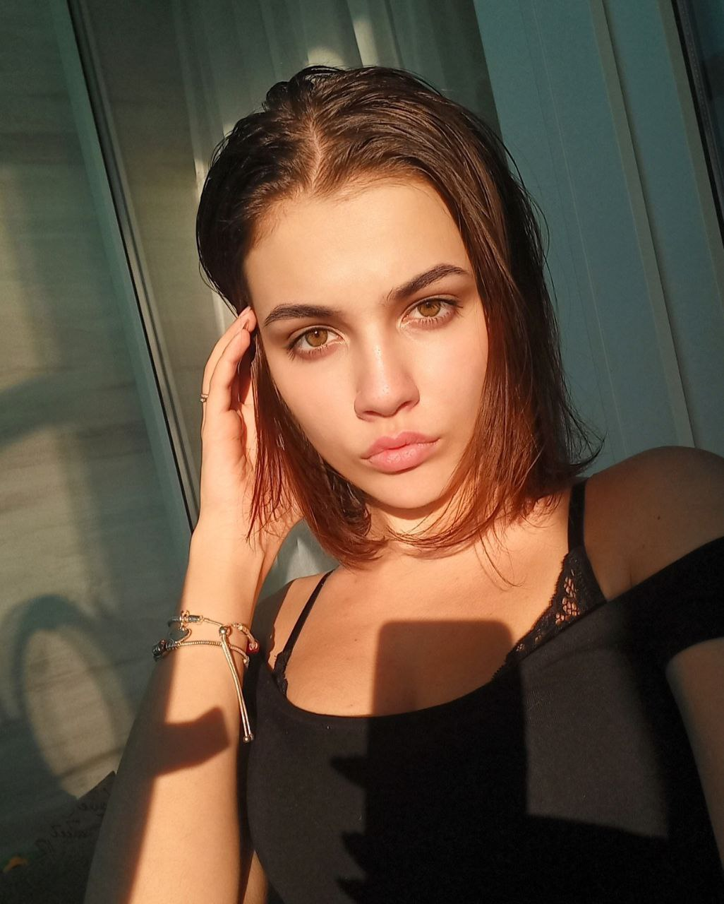
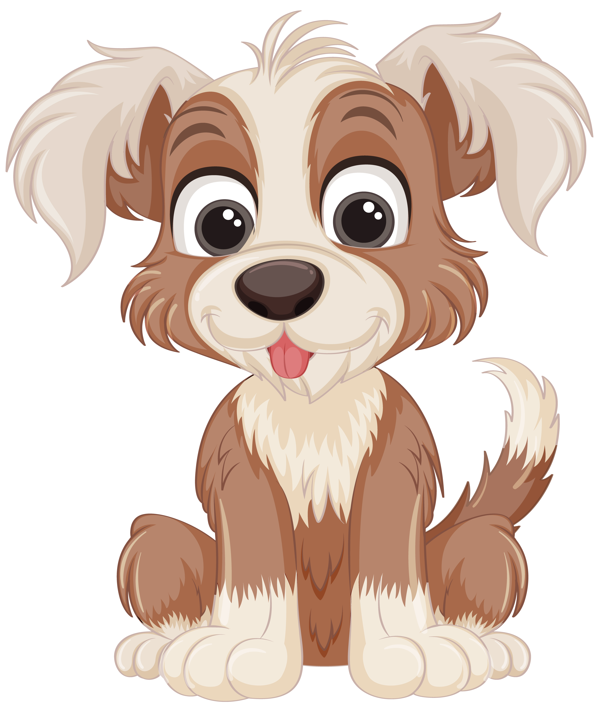

Про мене
 Катерина Олексіївна народилася в Києві 7 червня 2005 року у пологовому будинку №777.Відвідавши дитячий садок під номером 77, Катерина виявила своє захоплення мистецтвом, розвиваючи там свої перші творчі здібності та експериментуючи з фарбами та формами. Шляхом навчання в школі №7 вона продовжила своє мистецьке пізнання у графічному мистецтві. Зараз, знаходячись у Київському університеті, вона активно розвиває свої здібності у сфері мистецтва.У своїй майстерні, що стала для неї своєрідним світлом мистецтва, вона створює вражаючі картини та графічні композиції.Захоплення природою та теплими днями є не лише її інтересом, а й джерелом натхнення для нових творчих проектів, які відображають гармонію та красу навколишнього світу. Її внутрішня світлина та ентузіазм промовляють через її роботи, надихаючи глядачів на відкриття нових перспектив у мистецтві та дизайні. Її творчість вражає та надихає, підкреслюючи важливість самовираження та відкритості до нових творчих викликів.
Про рідних
Мати Катерини, Ірина Володимирівна, народилась в Києві. Вона працює в транспортній компанії, де відзначається своєю відданістю та високою професійною майстерністю. Батько Катерини, Олексій Євгенійович, також народився в Києві. Він працює в сфері відеоспостереження. До родини також належить Джой, собака, яка стала не тільки улюбленцем, а й вірним другом всієї сім'ї. Крім батьків, у Катерини є брат і сестра, які також народилися в Києві. Сестру звати Даша, живе у Києві. Брата звати Максим, живе у Києві.
Мої улюблені породи собак:
- Йорк
- Німецька вівчарка
- Доберман
Список моїх рідних:
- Мати - Ірина
- Батько - Олексій
- Брат - Максим
- Сестра - Даща
- Собака - Джой
Перехід до початку сторінки